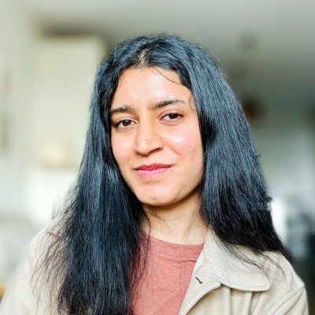

Shreya Thakkar
UX Researcher & Strategist
Work.
Talks and papers.
- The Design Researcher's RoomAI and design judgment. Part of The Authenticity Project.
- Negotiating Culture and Constraint in Generative AI for DesignPaper with Nidhi Singh Rathore
- Culturally responsive AI and jugaad innovationPeer-reviewed paper
- Ethical AI integration in research
- Ethical AI integration in research
Community.
- Climate Designers, LA Chapter
- IDSA Student Merit Awards
- World Design Organization